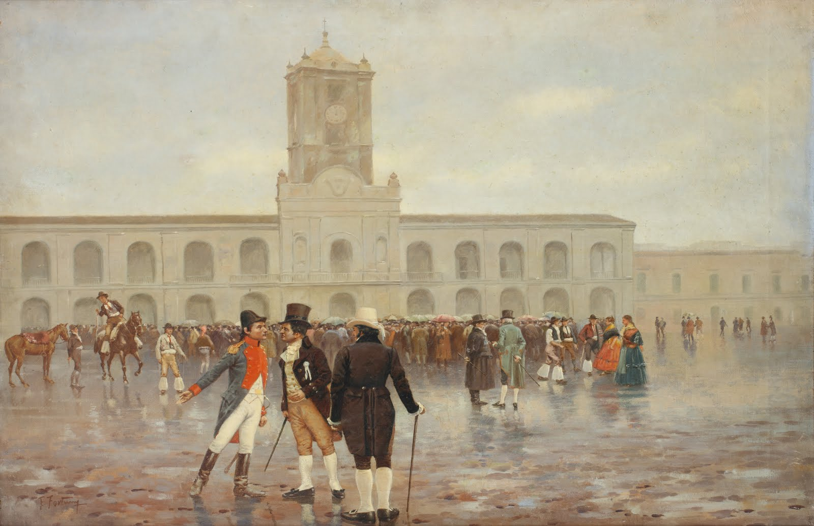

El 25 de mayo de 1810 en Argentina, tuvo lugar la Revolución de Mayo, un acontecimiento histórico que marcó el inicio del proceso de independencia del país. Este día se conmemora como el Día de la Patria.

Infografia del 25 de Mayo
El 25 de mayo de 1810 en Argentina, tuvo lugar la Revolución de Mayo, un acontecimiento histórico que marcó el inicio del proceso de independencia del país. Este día se conmemora como el Día de la Patria.
Para febrero de 1810 casi toda España se encontraba en manos de los franceses, terminando con Fernando VII prisionero de Napoleón. El 13 de mayo de 1810 llegaron a Buenos Aires las noticias de la caída de la Junta Central de Sevilla, último bastión del poder español.
La autoridad del virrey Baltasar Hidalgo de Cisneros había terminado. Pronto Cisneros tuvo que ceder a las presiones de las milicias criollas y de un grupo de jóvenes revolucionarios y convocó a un Cabildo Abierto para el 22 de mayo de 1810. Esto provocó la reacción de las milicias y el pueblo. Cornelio Saavedra y Juan José Castelli obtuvieron la renuncia del ex virrey.
La autoridad del virrey Baltasar Hidalgo de Cisneros había terminado. Pronto Cisneros tuvo que ceder a las presiones de las milicias criollas y de un grupo de jóvenes revolucionarios y convocó a un Cabildo Abierto para el 22 de mayo de 1810. Esto provocó la reacción de las milicias y el pueblo. Cornelio Saavedra y Juan José Castelli obtuvieron la renuncia del ex virrey.


fue un militar y político argentino que tuvo un papel destacado durante la Revolución de Mayo y la posterior lucha por la independencia de Argentina.
fue un abogado y político argentino que tuvo un papel importante durante la Revolución de Mayo y la lucha por la independencia de Argentina. Fue conocido como "el orador de la Revolución".
fue un abogado, economista, periodista, político y militar argentino, considerado uno de los padres de la patria y un líder en la lucha por la independencia de Argentina. Es especialmente reconocido por crear la bandera.
Miguel de Azcuénaga fue un político y militar argentino que desempeñó un papel destacado durante la Revolución de Mayo y la posterior lucha por la independencia de Argentina.